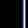

|
第37課
|
 |
 |
卡通映射:
什麼是卡通了，一個輪廓加上少量的幾種顏色。使用一維紋理映射，你也可以實現這種效果。 |
|
 |
 |
看到人們仍然e-mail我請求在文章中使用我方才在GameDev.net上寫的源代碼，還看到文章的第二版（在那每一個API附帶源碼）不是在中途完成之前連貫的結束。我已經把這篇指南一併出租給了NeHe（這實際上是寫文章的最初意圖）因此你們所有的OpenGL領袖可以玩轉它。對模型的選擇表示抱歉，但是我最近一直在玩Quake
2。
註釋：這篇文章的源代碼可以在這裡找到：
http://www.gamedev.net/reference/programming/features/celshading.
這篇指南實際上並不解釋原理，僅僅解釋代碼。在上面的連接中可以發現為什麼它能工作。現在不斷地大聲抱怨STOP E-MAILING ME REQUESTS
FOR SOURCE CODE!!!!
首先，我們需要包含一些額外的頭文件。第一個（math.h）我們可以使用sqrtf (square root)函數，第二個用來訪問文件。
|  |
#include <math.h>
#include <stdio.h>
|
現在我們將定義一些結構體來幫助我們存貯我們的數據（保存好幾百浮點數組）。第一個是tagMATRIX結構體。如果你仔細地看，你將看到我們正像包含一個十六個浮點數的1維數組~一個2維4×4數族一樣存儲那個矩陣。這下至OpenGL存儲它的矩陣的方式。如果我們使用4x4數組，這些值將發生錯誤的順序。
| |
typedef struct tagMATRIX // 保存OpenGL矩陣的結構體
{
float Data[16]; // 由於OpenGL的矩陣的格式我們使用[16
}
MATRIX;
|
第二是向量的類。 僅存儲X，Y和Z的值 |
|
typedef struct tagVECTOR // 存儲一個單精度向量的結構體
{
float X, Y, Z; // 向量的份量
}
VECTOR;
|
第三，我們持有頂點的結構。每一個頂點僅需要它的法線和位置（沒有紋理的現行縱坐標）信息。它們必須以這樣的次序被存放，否則當它停止裝載文件的事件將發生嚴重的錯誤（我發現艱難的情形：（教我分塊出租我的代碼。）。
| |
typedef struct tagVERTEX // 存放單一頂點的結構
{
VECTOR Nor; // 頂點法線
VECTOR Pos; // 頂點位置
}
VERTEX;
|
最後是多邊形的結構。我知道這是存儲頂點的愚蠢的方法，要不是它完美工作的簡單的緣故。通常我願意使用一個頂點數組，一個多邊形數組，和包括一個在多邊形中的3個頂點的指數，但這比較容易顯示你想幹什麼。 |
|
typedef struct tagPOLYGON // 存儲單一多邊形的結構
{
VERTEX Verts[3]; // 3個頂點結構數組
}
POLYGON;
|
優美簡單的材料也在這裡了。為每一個變量的一個解釋考慮那個註釋。 |
|
bool outlineDraw = true; // 繪製輪廓的標記
bool outlineSmooth = false; // Anti-Alias 線段的標記
float outlineColor[3] = { 0.0f, 0.0f, 0.0f }; // 線段的顏色
float outlineWidth = 3.0f; // 線段的寬度
VECTOR lightAngle; // 燈光的方向
bool lightRotate = false; // 是否我們旋轉燈光的標記
float modelAngle = 0.0f; // 模型的Y軸角度
bool modelRotate = false; // 旋轉模型的標記
POLYGON *polyData = NULL; // 多邊形數據
int polyNum = 0; // 多邊形的編號
GLuint shaderTexture[1]; // 存儲紋理ID
|
這是得到的再簡單不過的模型文件格式。 最初的少量字節存儲在場景中的多邊形的編號，文件的其餘是tagPOLYGON結構體的一個數組。正因如此，數據在沒有任何需要去分類到詳細的順序的情況下被讀出。 |
|
BOOL ReadMesh () // 讀「model.txt」 文件
{
FILE *In = fopen ("Data\\model.txt", "rb"); // 打開文件
if (!In)
return FALSE; // 如果文件沒有打開返回 FALSE
fread (&polyNum, sizeof (int), 1, In); // 讀文件頭，多邊形的個數
polyData = new POLYGON [polyNum]; // 分配內存
fread (&polyData[0], sizeof (POLYGON) * polyNum, 1, In);// 把所有多邊形的數據讀入
fclose (In); // 關閉文件
return TRUE; // 工作完成
}
|
一些基本的數學函數而已。DotProduct計算2個向量或平面之間的角，Magnitude函數計算向量的長度，Normalize函數縮放向量到一個單位長度。
| |
inline float DotProduct (VECTOR &V1, VECTOR &V2) //計算兩個向量之間的角度
{
return V1.X * V2.X + V1.Y * V2.Y + V1.Z * V2.Z;
}
inline float Magnitude (VECTOR &V) // 計算向量的長度
{
return sqrtf (V.X * V.X + V.Y * V.Y + V.Z * V.Z);
}
void Normalize (VECTOR &V) // 創建一個單位長度的向量
{
float M = Magnitude (V);
if (M != 0.0f) // 確保我們沒有被0隔開
{
V.X /= M;
V.Y /= M;
V.Z /= M;
}
}
|
這個函數利用給定的矩陣旋轉一個向量。請注意它僅旋轉這個向量——與向量的位置相比它算不了什麼。它用來當旋轉法線確保當我們在計算燈光時它們停留在正確的方向上。 |
|
void RotateVector (MATRIX &M, VECTOR &V, VECTOR &D) // 利用提供的矩陣旋轉一個向量
{
D.X = (M.Data[0] * V.X) + (M.Data[4] * V.Y) + (M.Data[8] * V.Z);
D.Y = (M.Data[1] * V.X) + (M.Data[5] * V.Y) + (M.Data[9] * V.Z);
D.Z = (M.Data[2] * V.X) + (M.Data[6] * V.Y) + (M.Data[10] * V.Z);
}
|
引擎的第一個主要的函數…… 初始化，按所說的精確地做。我已經砍掉了在註釋中不再需要的代碼段。 |
|
// 一些GL 初始代碼和用戶初始化從這裡開始
BOOL Initialize (GL_Window* window, Keys* keys)
{
|
這3個變量用來裝載著色文件。在文本文件中為了單一的線段線段包含了空間，雖然shaderData存儲了真實的著色值。你可能奇怪為什麼我們的96個值被32個代替了。好了，我們需要轉換greyscale
值為RGB以便OpenGL能使用它們。我們仍然可以以greyscale存儲這些值，但向上負載紋理時我們至於R，G和B成分僅僅使用同一值。 |
|
char Line[255]; // 255個字符的存儲量
float shaderData[32][3]; // 96個著色值的存儲量
g_window = window;
g_keys = keys;
FILE *In = NULL; // 文件指針
|
當繪製線條時，我們想要確保很平滑。初值被關閉，但是按「2」鍵，它可以被toggled on/off。 |
|
glShadeModel (GL_SMOOTH); // 使用色彩陰影平滑
glDisable (GL_LINE_SMOOTH); // 線條平滑初始化不可用
glHint (GL_PERSPECTIVE_CORRECTION_HINT, GL_NICEST); // 提高計算精度
glClearColor (0.7f, 0.7f, 0.7f, 0.0f); // 設置為灰色背景
glClearDepth (1.0f); // 設置深度緩存值
glEnable (GL_DEPTH_TEST); // 啟用深度測試
glDepthFunc (GL_LESS); // 設置深度比較函數
glShadeModel (GL_SMOOTH); // 啟用反走樣
glDisable (GL_LINE_SMOOTH);
glEnable (GL_CULL_FACE); // 啟用剔除多邊形功能
|
我們使 OpenGL燈光不可用因為我們自己做所以的燈光計算。 |
|
glDisable (GL_LIGHTING); // 使 OpenGL 燈光不可用
|
這裡是我們裝載陰影文件的地方。它簡單地以32個浮點值ASCII碼存放（為了輕鬆修改），每一個在separate線上。 |
|
In = fopen ("Data\\shader.txt", "r"); // 打開陰影文件
if (In) // 檢查文件是否打開
{
for (i = 0; i < 32; i++) // 循環32次
{
if (feof (In)) // 檢查文件是否結束
break;
fgets (Line, 255, In); // 獲得當前線條
|
這裡我們轉換 greyscale 值為 RGB, 正像上面所描述的。 |
|
// 從頭到尾複製這個值
shaderData[i][0] = shaderData[i][1] = shaderData[i][2] = atof (Line);
}
fclose (In); // 關閉文件
}
else
return FALSE;
|
現在我們向上裝載這個紋理。同樣它清楚地規定，不要使用任何一種過濾在紋理上否則它看起來奇怪，至少可以這樣說。GL_TEXTURE_1D被使用因為它是值的一維數組。 |
|
glGenTextures (1, &shaderTexture[0]); // 獲得一個自由的紋理ID
glBindTexture (GL_TEXTURE_1D, shaderTexture[0]); // 綁定這個紋理。 從現在開始它變為一維
// 使用鄰近點過濾
glTexParameteri (GL_TEXTURE_1D, GL_TEXTURE_MAG_FILTER, GL_NEAREST);
glTexParameteri (GL_TEXTURE_1D, GL_TEXTURE_MIN_FILTER, GL_NEAREST);
// 設置紋理
glTexImage1D (GL_TEXTURE_1D, 0, GL_RGB, 32, 0, GL_RGB , GL_FLOAT, shaderData);
|
現在調整燈光方向。我已經使得它向下指向Z軸正方向，這意味著它將正面碰撞模型 |
|
lightAngle.X = 0.0f;
lightAngle.Y = 0.0f;
lightAngle.Z = 1.0f;
Normalize (lightAngle);
|
讀取Mesh文件,並返回 |
|
return ReadMesh (); // 讀取Mesh文件,並返回
}
|
與上面的函數相對應…… 卸載，刪除由Initalize 和 ReadMesh 創建的紋理和多邊形數據。 |
|
void Deinitialize (void)
{
glDeleteTextures (1, &shaderTexture[0]); // 刪除陰影紋理
delete [] polyData; // 刪除多邊形數據
}
|
主要的演示循環。所有這些用來處理輸入和更新角度。控制如下：
<SPACE> =鎖定旋轉
1 = 鎖定輪廓繪製
2 = 鎖定輪廓 anti-aliasing
<UP> =增加線寬
<DOWN> = 減小線寬 | |
void Update (DWORD milliseconds) // 這裡執行動作更新
{
if (g_keys->keyDown [' '] == TRUE) // 空格是否被按下
{
modelRotate = !modelRotate; // 鎖定模型旋轉開/關
g_keys->keyDown [' '] = FALSE;
}
if (g_keys->keyDown ['1'] == TRUE) // 1是否被按下
{
outlineDraw = !outlineDraw; // 切換是否繪製輪廓線
g_keys->keyDown ['1'] = FALSE;
}
if (g_keys->keyDown ['2'] == TRUE) // 2是否被按下
{
outlineSmooth = !outlineSmooth; // 切換是否使用反走樣
g_keys->keyDown ['2'] = FALSE;
}
if (g_keys->keyDown [VK_UP] == TRUE) // 上鍵增加線的寬度
{
outlineWidth++;
g_keys->keyDown [VK_UP] = FALSE;
}
if (g_keys->keyDown [VK_DOWN] == TRUE) // 下減少線的寬度
{
outlineWidth--;
g_keys->keyDown [VK_DOWN] = FALSE;
}
if (modelRotate) // 是否旋轉
modelAngle += (float) (milliseconds) / 10.0f; // 更新旋轉角度
}
|
你一直在等待的函數。Draw 函數做每一件事情——計算陰影的值，著色網孔，著色輪廓，等等，這是它作的。 |
|
void Draw (void)
{
|
TmpShade用來存儲當前頂點的色度值。所有頂點數據同時被計算，意味著我們只需使用我們能繼續使用的單個的變量。
TmpMatrix, TmpVector 和 TmpNormal同樣被用來計算頂點數據，TmpMatrix在函數開始時被調整一次並一直保持到Draw函數被再次調用。TmpVector
和 TmpNormal則相反，當另一個頂點被處理時改變。
| |
float TmpShade; // 臨時色度值
MATRIX TmpMatrix; // 臨時 MATRIX 結構體
VECTOR TmpVector, TmpNormal; // 臨時 VECTOR結構體
|
清除緩衝區矩陣數據 |
|
glClear (GL_COLOR_BUFFER_BIT | GL_DEPTH_BUFFER_BIT); // 清除緩衝區
glLoadIdentity (); // 重置矩陣
|
首先檢查我們是否想擁有平滑的輪廓。如果是，我們就打開anti-alaising 。否則把它關閉。簡單！ |
|
if (outlineSmooth) // 檢查我們是否想要 Anti-Aliased 線條
{
glHint (GL_LINE_SMOOTH_HINT, GL_NICEST); // 啟用它們
glEnable (GL_LINE_SMOOTH);
}
else // 否則不啟用
glDisable (GL_LINE_SMOOTH);
|
然後我們設置視口。我們反向移動攝像機2個單元，之後以一定角度旋轉模型。註：由於我們首先移動攝像機，這個模型將在現場旋轉。如果我們以另一種方法做，模型將繞攝像機旋轉。
我們之後從OpenGL中取最新創建的矩陣並把它存儲在 TmpMatrix。
| |
glTranslatef (0.0f, 0.0f, -2.0f); // 移入屏幕兩個單位
glRotatef (modelAngle, 0.0f, 1.0f, 0.0f); // 繞Y軸旋轉這個模型
glGetFloatv (GL_MODELVIEW_MATRIX, TmpMatrix.Data); // 獲得產生的矩陣
|
戲法開始了。首先我們啟用一維紋理，然後啟用著色紋理。這被OpenGL用來當作一個look-up表格。我們之後調整模型的顏色（白色）我選擇白色是因為它亮度高並且描影法比其它顏色好。我建議你不要使用黑色：）
| |
// 卡通渲染代碼
glEnable (GL_TEXTURE_1D); // 啟用一維紋理
glBindTexture (GL_TEXTURE_1D, shaderTexture[0]); // 鎖定我們的紋理
glColor3f (1.0f, 1.0f, 1.0f); // 調整模型的顏色
|
現在我們開始繪製那些三角形。儘管我們看到在數組中的每一個多邊形，然後旋轉它的每一個頂點。第一步是拷貝法線信息到一個臨時的結構中。因此我們能旋轉法線，但仍然保留原來保存的值（沒有精確降級）。
| |
glBegin (GL_TRIANGLES); // 告訴 OpenGL 我們即將繪製三角形
for (i = 0; i < polyNum; i++) // 從頭到尾循環每一個多邊形
{
for (j = 0; j < 3; j++) // 從頭到尾循環每一個頂點
{
TmpNormal.X = polyData[i].Verts[j].Nor.X; // 用當前頂點的法線值填充TmpNormal結構
TmpNormal.Y = polyData[i].Verts[j].Nor.Y;
TmpNormal.Z = polyData[i].Verts[j].Nor.Z;
|
第二，我們通過初期從OpenGL中攫取的矩陣來旋轉這個法線。我們之後規格化因此它並不全部變為螺旋形。 |
|
// 通過矩陣旋轉
RotateVector (TmpMatrix, TmpNormal, TmpVector);
Normalize (TmpVector); // 規格化這個新法線
|
第三，我們獲得那個旋轉的法線的點積燈光方向（稱為lightAngle，因為我忘了從我的舊的light類中改變它）。我們之後約束這個值在0——1的範圍。（從-1到+1）
|
|
// 計算色度值
TmpShade = DotProduct (TmpVector, lightAngle);
if (TmpShade < 0.0f)
TmpShade = 0.0f; // 如果負值約束這個值到0
|
第四，對於OpenGL我們象忽略紋理坐標一樣忽略這個值。陰影紋理與一個查找表一樣來表現（色度值正成為指數），這是（我認為）為什麼1D紋理被創造主要原因。對於OpenGL我們之後忽略這個頂點位置，並不斷重複，重複。至此我認為你已經抓到了概念。 |
|
glTexCoord1f (TmpShade); // 規定紋理的縱坐標當作這個色度值
// 送頂點
glVertex3fv (&polyData[i].Verts[j].Pos.X);
}
}
glEnd (); // 告訴OpenGL 完成繪製
glDisable (GL_TEXTURE_1D); // 1D 紋理不可用
|
現在我們轉移到輪廓之上。一個輪廓能以「它的相鄰的邊，一邊為可見，另一邊為不可見」定義。在OpenGL中，這是深度測試被規定小於或等於(GL_LEQUAL)當前值的地方，並且就在那時所有前面的面被精選。我們同樣也要混合線條，以使它看起來不錯：）
那麼，我們使混合可用並規定混合模式。我們告訴OpenGL與著色線條一樣著色backfacing多邊形，並且規定這些線條的寬度。我們精選所有前面多邊形，並規定測試深度小於或等於當前的Z值。在這個線條的的顏色被規定後，我們從頭到尾循環每一個多邊形，繪製它的頂點。我們僅需忽略頂點位置，而不是法線或著色值因為我們需要的僅僅是輪廓。
| |
// 輪廓代碼
if (outlineDraw) // 檢查看是否我們需要繪製輪廓
{
glEnable (GL_BLEND); // 使混合可用
// 調整混合模式
glBlendFunc (GL_SRC_ALPHA ,GL_ONE_MINUS_SRC_ALPHA);
glPolygonMode (GL_BACK, GL_LINE); // 繪製輪廓線
glLineWidth (outlineWidth); // 調整線寬
glCullFace (GL_FRONT); // 剔出前面的多邊形
glDepthFunc (GL_LEQUAL); // 改變深度模式
glColor3fv (&outlineColor[0]); // 規定輪廓顏色
glBegin (GL_TRIANGLES); // 告訴OpenGL我們想要繪製什麼
for (i = 0; i < polyNum; i++) // 從頭到尾循環每一個多邊形
{
for (j = 0; j < 3; j++) // 從頭到尾循環每一個頂點
{
// 送頂點
glVertex3fv (&polyData[i].Verts[j].Pos.X);
}
}
glEnd (); // 告訴 OpenGL我們已經完成
|
這樣以後，我們就把它規定為以前的狀態，然後退出 |
|
glDepthFunc (GL_LESS); // 重置深度測試模式
glCullFace (GL_BACK); // 重置剔出背面多邊形
glPolygonMode (GL_BACK, GL_FILL); // 重置背面多邊形繪製方式
glDisable (GL_BLEND); // 混合不可用
}
}
 | |  |
|
你現在看到Cel-Shading並非那樣難。當然技術可以提高非常多。一個好的例子是遊戲XIII
http://www.nvidia.com/object/game_xiii.html，它使你認為你在一個卡通世界裡。如果你想在卡通透視技術裡達到更深層次，你可以瀏覽這本書實時透視這一章「Non-Photorealistic
Rendering」。如果你更喜歡在WEB上讀論文，在這裡可以發現一大堆聯接列表：http://www.red3d.com/cwr/npr/
 |
版權與使用聲明:
我是個對學習和生活充滿激情的普通男孩,在網絡上我以DancingWind為暱稱，我的聯繫方式是zhouwei02@mails.tsinghua.edu.cn，如果你有任何問題，都可以聯繫我。
引子
網絡是一個共享的資源，但我在自己的學習生涯中浪費大量的時間去搜索可用的資料，在現實生活中花費了大量的金錢和時間在書店中尋找資料，於是我給自己起了個暱稱DancingWind，其意義是想風一樣從各個知識的站點中吸取成長的養料。在飄蕩了多年之後，我決定把自己收集的資料整理為一個統一的資源庫。
版權聲明
所有DancingWind發表的內容，大多都來自共享的資源，所以我沒有資格把它們據為己有，或聲稱自己為這些資源作出了一點貢獻。故任何人都可以複製，修改，重新發表，甚至以自己的名義發表，我都不會追究，但你在做以上事情的時候必須保證內容的完整性，給後來的人一個完整的教程。最後，任何人不能以這些資料的任何部分，謀取任何形式的報酬。
發展計劃
在國外，很多資料都是很多人花費幾年的時間慢慢積累起來的。如果任何人有興趣與別人共享你的知識，我很歡迎你與我聯繫，但你必須同意我上面的聲明。
感謝
感謝我的母親一直以來對我的支持和在生活上的照顧。
感謝我深愛的女友田芹，一直以來默默的在精神上和生活中對我的支持，她甚至把買衣服的錢都用來給我買書了，她真的是我見過的最好的女孩，希望我能帶給她幸福。
資源下載:
文檔 網頁格式
PDF格式
源碼 RAR格式 |
|
|